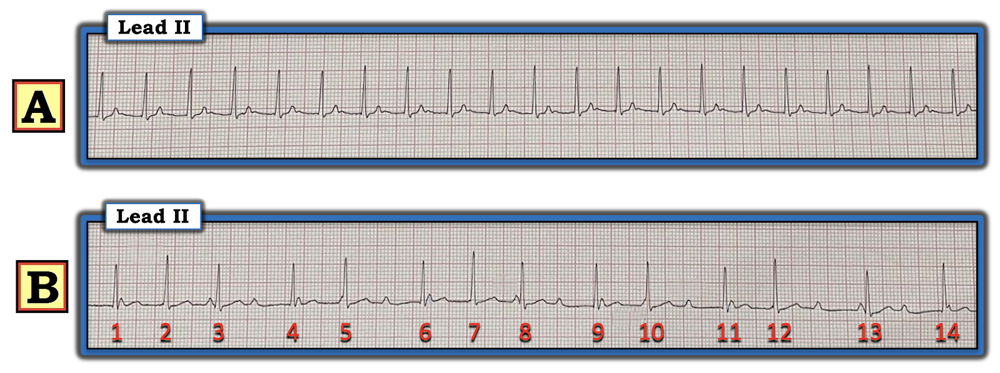
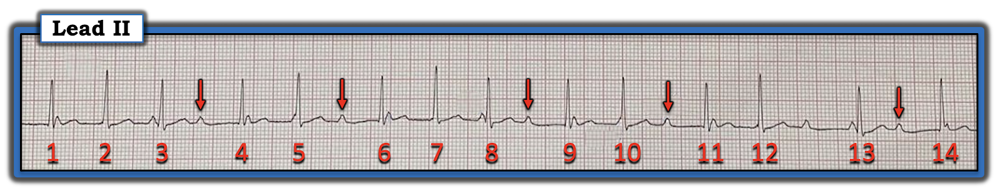
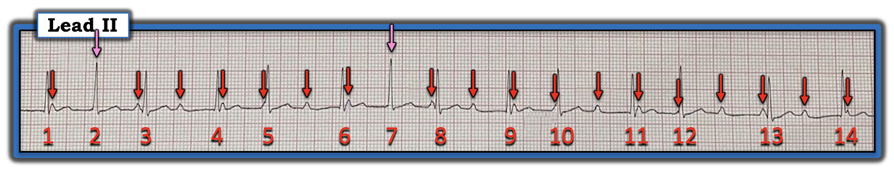
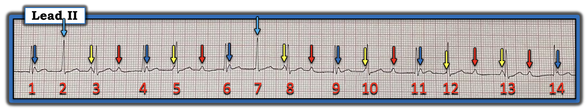
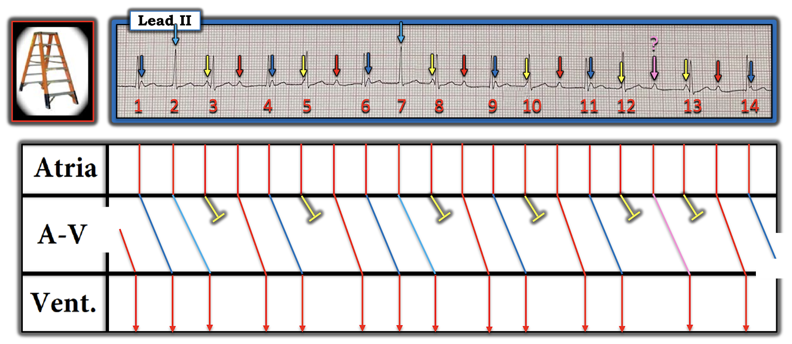
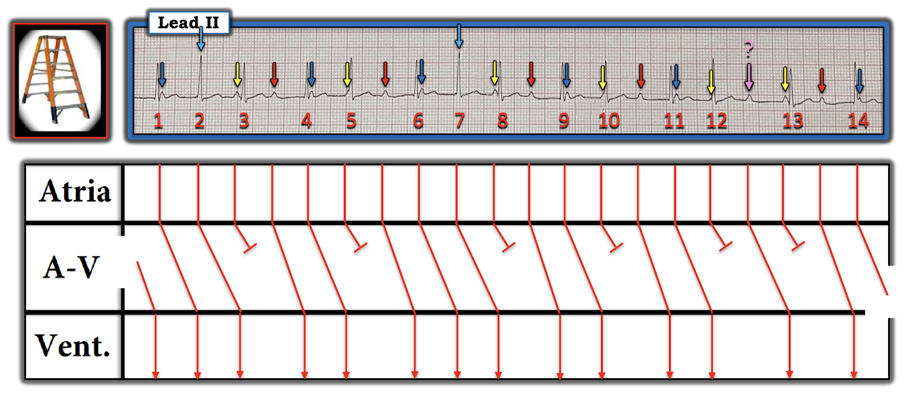
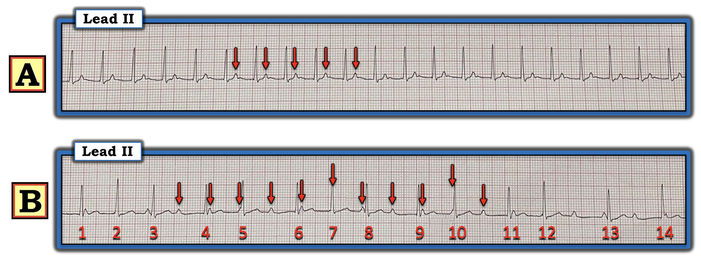

ECG Blog #355 — Vì sao có các khoảng ngưng khi SVT?
2 dải nhịp chuyển đạo II trong Hình-1 — được ghi từ một phụ nữ 50 tuổi đến khám vì hồi hộp đánh trống ngực (palpitations). Bệnh nhân ổn định huyết động vào thời điểm ghi cả hai dải nhịp.
CÂU HỎI:
- BẠN sẽ đọc nhịp này như thế nào?
- Vì sao có các khoảng ngưng ở dải nhịp "B"?


SUY NGHĨ CỦA TÔI về nhịp trong Hình-1:
Chúng ta được biết cả hai dải nhịp trong Hình-1 đều được ghi từ cùng một bệnh nhân — với khoảng thời gian ngắn giữa 2 lần ghi này.
- Dù vậy — chúng ta không được biết bệnh nhân này có được điều trị gì hay không. Điều này có ý nghĩa — vì có sự khác biệt rõ ràng giữa 2 bản ghi.
Dải nhịp A:
Như mọi khi — tôi bắt đầu đánh giá nhịp bằng cách xem xét Ps, Qs và 3Rs (như đã bàn chi tiết trong ECG Blog #185).
- Xin nhấn mạnh — khi áp dụng hệ thống Ps, Qs, 3R — bạn không cần đi theo thứ tự. Thay vào đó — tôi thích xem xét những thông số nào dễ đánh giá nhất trước.
- Nhịp ở "A" nhanh và đều. Tần số ~135/phút. Dù chỉ thấy một chuyển đạo theo dõi duy nhất — QRS có vẻ hẹp. Dường như không có sóng P xoang (ít nhất là không có sóng P với khoảng PR bình thường) — không thấy "mối liên hệ" rõ ràng giữa hoạt động nhĩ và phức bộ QRS.
- NHẬN ĐỊNH: Nhịp ở "A" là một SVT (nhịp nhanh trên thất, SupraVentricular Tachycardia) đều với tần số ~135/phút, không có dấu hiệu rõ ràng của sóng P xoang.
ĐIỂM THEN CHỐT (PEARL) #1: Việc nhận ra nhịp trong Hình-1 là một SVT đều không có dấu hiệu rõ ràng của sóng P xoang (tức là không có sóng P dương rõ ràng ở chuyển đạo II) — phải gợi ý ta nghĩ tới DANH SÁCH chẩn đoán phân biệt sau:
- i) Nhịp nhanh xoang (NẾU có khả năng sóng P xoang đang ẩn trong sóng ST-T đi trước);
- ii) Một SVT vào lại (hoặc AVNRT nếu vòng vào lại nằm trong nút AV — hoặc AVRT nếu có sự tham gia của một AP [đường phụ, Accessory Pathway] nằm ngoài nút AV);
- iii) Nhịp nhanh nhĩ (ATach);
- iv) Cuồng nhĩ (AFlutter) với dẫn truyền AV 2:1.
Điểm MẤU CHỐT: Mặc dù các bệnh lý khác cũng có thể gây SVT đều (tức là nhịp nhanh vào lại nút xoang nhĩ, nhịp nhanh bộ nối) — chúng ít gặp hơn nhiều trong thực hành. Vì vậy, nhớ nghĩ tới 4 bệnh lý trong DANH SÁCH trên mỗi khi gặp một nhịp SVT đều không có dấu hiệu rõ ràng của sóng P xoang — sẽ giúp rất nhiều trong việc xác định chẩn đoán đúng.
- Ở Nhịp "A" — bất kỳ bệnh lý nào trong 4 bệnh lý trên đều có thể có mặt. Thực tế lâm sàng — là việc điều trị nhịp này sẽ phải bắt đầu trước khi chúng ta biết chắc bệnh lý nào là chẩn đoán thực sự. Dù vậy — xử trí ban đầu cho bệnh nhân này sẽ tương tự nhau bất kể nhịp này là bệnh lý nào trong 4 bệnh lý trên (tức là cân nhắc nghiệm pháp cường phế vị — và/hoặc dùng một thuốc ức chế nút AV như Adenosine, Verapamil-Diltiazem, hoặc thuốc chẹn ß).
===============================
ĐIỂM THEN CHỐT (PEARL) #2: Đánh giá Nhịp "B" cho ta lời giải cho Nhịp "A"! Đây là nguyên tắc: đánh giá thêm các đoạn theo dõi khác trên cùng bệnh nhân có thể mang lại thông tin sâu sắc giúp chẩn đoán.
Dải nhịp B:
Khác biệt rõ ràng nhất giữa Nhịp "A" và Nhịp "B" trong Hình-1 — là nhịp ở "B" không còn đều nữa. Thay vào đó — chúng ta ghi nhận những điểm sau:
- Có các khoảng ngưng ở Nhịp B.
- Có nhịp theo nhóm (group beating) (tức là các nhóm 2 nhát — và 3 nhát — mỗi nhóm cách nhau bởi các khoảng ngưng mà phần lớn có thời gian tương tự nhau).
- Sóng P giờ đã hiện diện rõ ràng ở Nhịp B.
- Vượt ra ngoài phần cốt lõi: Một nhận xét nâng cao quan trọng có thể thực hiện nhờ dùng compa đo (calipers) — là tần số của các sóng P thấy được ở B (lấy khoảng P-P giữa 2 sóng P bất kỳ thấy liên tiếp nhau) — hơi chậm hơn tần số thất ở Nhịp A.
- Dấu hiệu này có ý nghĩa — vì ta có thể nghi ngờ rằng có lẽ bệnh nhân này đã được bắt đầu dùng một loại thuốc ức chế nút AV nào đó ở A — dẫn đến tần số nhĩ chậm lại đôi chút, và xuất hiện một dạng blốc AV nào đó ... Nhưng hãy đi dần tới điều này theo từng bước ...
Có dẫn truyền ở Nhịp B không?
Phần dưới đây là đánh giá Nhịp B. Như đã nêu ở trên — có sóng P — và có nhịp theo nhóm ở Nhịp B.
- ĐIỂM THEN CHỐT (PEARL) #3: Lý do chúng ta biết rằng có dẫn truyền của ít nhất một số sóng P thấy ở Nhịp B — là khoảng PR giống hệt nhau xuất hiện trước phần lớn các nhát kết thúc một khoảng ngưng! (các mũi tên ĐỎ trong Hình-2). Điều này không phải ngẫu nhiên! Thay vào đó — nó cho chúng ta biết nhát đầu tiên trong mỗi nhóm đang được dẫn truyền, dù với một khoảng PR dài (tức là ~0.44 giây).


Nhịp nhĩ ở B Thực Sự Đều!
Dùng compa đo giúp (và giúp nhanh hơn rất nhiều!) xác định rằng nhịp nhĩ ở B là đều (các mũi tên ĐỎ trong Hình-3).
- LƯU Ý: Các mũi tên HỒNG đánh dấu 2 sóng P trong dải nhịp này mà chúng ta không nhìn thấy — vì các sóng P này bị ẩn trong QRS của nhát #2 và 7. Nhưng xét việc tất cả các sóng P mũi tên ĐỎ khác đều đặn như thế nào — chúng ta biết rằng các sóng P đúng lúc gần như chắc chắn đang ẩn dưới các mũi tên HỒNG đó!
- Điều này gợi ý rằng nhịp nền trong Hình-3 — là ATach (nhịp nhanh nhĩ, Atrial Tachycardia) với tần số ~130/phút (các mũi tên ĐỎ và HỒNG cho thấy các sóng P đều đặn suốt dải nhịp).


ĐIỂM THEN CHỐT (PEARL) #4: Khi bạn thấy ATach kèm nhịp theo nhóm (group beating) — Hãy nghĩ tới Wenckebach! Như đã bàn trong ECG Blog #261 — "Cái gì thường gặp thì thường gặp" — và nhịp nhanh nhĩ rất thường đi kèm dẫn truyền Wenckebach.
- Việc nhận ra nhịp theo nhóm (group beating) trong Hình-2 — trong đó có một nhịp nhĩ nền đều + các khoảng PR giống hệt nhau lặp lại + thời gian khoảng R-R tương tự nhau ở phần lớn các khoảng ngưng — gợi ý mạnh mẽ rằng có dẫn truyền Wenckebach AV.
Để giúp nhận ra dẫn truyền Wenckebach này — tôi đã mã hóa màu các sóng P trong Hình-4:
- Các mũi tên ĐỎ đánh dấu sóng P đầu tiên trong phần lớn các nhóm. Lưu ý rằng khoảng PR của các sóng P này (tức là khoảng PR đi trước các nhát #4, 6, 9, 11 và 14) — giống hệt nhau (tức là kéo dài tới ~0.44 giây).
- Các mũi tên XANH đậm đánh dấu sóng P thứ 2 ở 6 nhóm. Khoảng PR của các sóng P này (đi trước các nhát #2, 5, 7, 10 và 12) — dài hơn khoảng PR được đánh dấu bởi các mũi tên ĐỎ (tức là ~0.50 so với 0.44 giây).
- Các mũi tên XANH nhạt đánh dấu vị trí nơi sóng P thứ 3 bị ẩn ở 2 nhóm. Khoảng PR của các sóng P này còn dài hơn nữa (tức là ~0.54 giây).
- Các mũi tên VÀNG đánh dấu sóng P cuối cùng trong mỗi nhóm. Các sóng P VÀNG này không được dẫn truyền do blốc Wenckebach. Lưu ý rằng sau mỗi mũi tên VÀNG này — là một mũi tên ĐỎ, từ đó bắt đầu nhóm tiếp theo.


Minh họa bằng Giản đồ bậc thang:
Sẽ dễ nhận ra sự hiện diện của dẫn truyền Wenckebach cho nhịp ATach trong Hình-4 hơn nhiều — bằng cách dùng Giản đồ bậc thang (laddergram) mà tôi đã vẽ trong Hình-5:
- Tôi giữ nguyên cách mã hóa màu như trong Hình-4.
- Cách dễ nhất để theo dõi các sự kiện trong giản đồ bậc thang — là chọn bất kỳ nhóm nhát nào, và bắt đầu bằng cách theo đường đi của sóng P mũi tên ĐỎ trong nhóm đó. Ví dụ — sóng P mũi tên ĐỎ trước nhát #6 cho thấy khoảng PR kéo dài dần đối với các mũi tên XANH đậm rồi XANH nhạt theo sau — cho tới khi sóng P mũi tên VÀNG (xuất hiện ngay trước nhát #8) không được dẫn truyền.
- Nhóm Wenckebach tiếp theo sau đó bắt đầu với sóng P mũi tên ĐỎ đi trước nhát #9.
- Dẫn truyền Wenckebach trong Hình-5 biểu hiện dẫn truyền AV 4:3 và 3:2.
- LƯU Ý: Khoảng PR của sóng P mũi tên HỒNG hơi dài hơn khoảng PR của tất cả các sóng P mũi tên ĐỎ. Tôi không chắc lắm vì sao. Tôi vẽ giản đồ bậc thang thể hiện rằng sóng P mũi tên HỒNG này có được dẫn truyền xuống thất (nhưng tôi thêm một dấu hỏi để thừa nhận rằng tôi không chắc chắn sóng P này được dẫn truyền). Dù vậy — điều này không quan trọng về mặt lâm sàng, vì "chủ đề" của nhịp này không thay đổi (tức là ATach với dẫn truyền Wenckebach).


Giản đồ bậc thang cuối cùng:
Thông thường tôi không mã hóa màu các đường dùng để dựng giản đồ bậc thang. Vì vậy tôi đã làm cho tất cả các đường trong giản đồ bậc thang cùng một màu. Với Hình-5 làm nền tảng — giờ đây sẽ dễ dàng theo dõi giản đồ bậc thang cuối cùng trong Hình-6.


ÔN LẠI CA BỆNH:
Hãy NHÌN lại một lần nữa 2 nhịp gốc đã trình bày trong Hình-1. Lưu ý trong Hình-7 — tôi đã thêm một số mũi tên ĐỎ chọn lọc để đánh dấu hoạt động nhĩ.
- Giờ khi chúng ta đã xác định rằng Nhịp B là ATach với dẫn truyền Wenckebach AV 4:3 và 3:2 — hẳn đã rõ rằng Nhịp A là ATach với dẫn truyền AV 1:1 và khoảng PR dài và hằng định (khoảng ~0.32 giây). Thứ từng được cho là sóng T "nhọn" ở Nhịp A — hóa ra lại là sóng P của một nhịp nhanh nhĩ lạc chỗ.
- Tổng Hợp Lại Tất cả: Chúng ta không được biết bệnh nhân hôm nay có được điều trị gì trong khoảng thời gian giữa lúc ghi Nhịp A và Nhịp B hay không. Tôi rất nghi ngờ rằng một dạng điều trị ức chế nút AV nào đó đã được dùng (tức là Adenosine, Verapamil-Diltiazem hoặc thuốc chẹn ß) vì: i) Tần số thất (và do đó cả tần số nhĩ) của Nhịp A hơi nhanh hơn tần số nhĩ ở Nhịp B (tức là ~135/phút so với 130/phút); ii) Khoảng PR của nhát dẫn truyền thứ 1 trong mỗi nhóm Wenckebach ở Nhịp B dài hơn khoảng PR trong lúc dẫn truyền AV 1:1 ở Nhịp A (tức là 0.44 giây — so với 0.32 giây); và, iii) Có dẫn truyền Wenckebach ở Nhịp B, trong khi ở Nhịp A là dẫn truyền AV 1:1.
- Kết luận hợp lý nhất là một thuốc ức chế nút AV nào đó đã được dùng cho bệnh nhân khi bà đến viện với Nhịp A — và điều này dẫn đến tần số nhĩ chậm lại đôi chút, khoảng PR tăng lên — và dẫn truyền Wenckebach trong đó cứ mỗi nhát thứ 3 hoặc thứ 4 bị blốc.


ĐIỂM CUỐI CÙNG: Thay vì gọi Nhịp B là một dạng "blốc" AV độ 2 nào đó — tôi thích xem nhịp này là ATach kèm dẫn truyền Wenckebach. Dạng dẫn truyền Wenckebach này thường là sinh lý, do tần số nhĩ nhanh. Nó thường không phản ánh một khiếm khuyết dẫn truyền cụ thể nào — và dẫn truyền Wenckebach thường sẽ hết nếu ATach được kiểm soát.
==================================
LỜI CẢM ƠN: Xin cảm ơn Hafiz Abdul Mannan Shahid (Lahore, Pakistan) đã cung cấp ca bệnh và các bản ghi này.
==================================
PHẦN BỔ SUNG (1/6/2023):
- Các Audio Pearl dưới đây có thể hữu ích để đánh giá các nhịp trong ca hôm nay.

ECG Media PEARL #51a (7:40 phút Audio) — Ôn lại "Một số bước đơn giản giúp đọc các nhịp phức tạp" ).

ECG Media PEARL #55 (4:20 phút Audio) — Thuật ngữ "SVT" nghĩa là gì? Audio Pearl này ôn lại ngữ nghĩa và ứng dụng lâm sàng khi sử dụng thuật ngữ này.
==================================
Các bài ECG liên quan đến ca hôm nay:
- ECG Blog #185 — Cách tiếp cận hệ thống của tôi để đọc nhịp.
- ECG Blog #261 — Một ca ATach với dẫn truyền Wenckebach.
- ECG Blog #55 — MI thành dưới cấp + Wenckebach AV.
- ECG Blog #154 — MI thành dưới cấp + Wenckebach AV.
- ECG Blog #168 — MI thành dưới cấp + blốc Wenckebach (hai tầng).
- ECG Blog #224 — MI thành dưới cấp + Wenckebach AV.
- ECG Blog #240 — Ôn lại cách đánh giá Chẩn đoán phân biệt của nhịp SVT đều.
- ECG Blog #261 — Ôn lại cách đánh giá một ca tương tự Nhịp "B".
- ECG Blog #229 — Vì sao AFlutter lại thường bị bỏ sót đến vậy?
- ECG Blog #137 — AFlutter với tỷ lệ dẫn truyền bất thường.
- ECG Blog #138 — AFlutter so với nhịp nhanh nhĩ.
- ECG Blog #40 — Thêm một SVT đều hóa ra là AFlutter.
- González-Torrecilla và cs.: Ann Noninvasive Electrocardiol 16(1):85-95, 2011 — Ôn lại cách phân biệt AVNRT với AVRT và các nhịp SVT đều khác ở bệnh nhân không có WPW.
- ECG Blog #188 — Cách đọc (và vẽ) Giản đồ bậc thang.